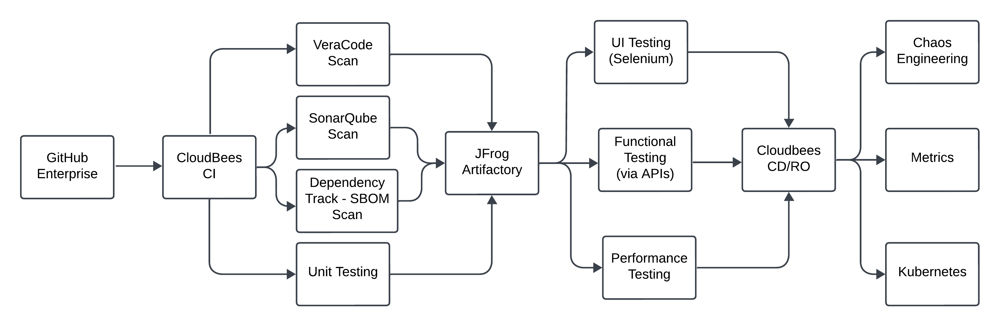

<!-- Image Map Generated by http://www.image-map.net/ -->


<map name="image-map">
    <area target="_blank" alt="GitHub Enterprise" title="GitHub Enterprise" href="https://farmersinsurance.sharepoint.com/sites/DevOpsPortal/SitePages/Introduction%20to%20GitHub%20Enterprise.aspx" coords="75,494,418,725" shape="rect">
    <area target="_blank" alt="Cloudbees CI" title="Cloudbees CI" href="https://farmersinsurance.sharepoint.com/sites/DevOpsPortal/SitePages/Introduction%20to%20CloudBees%20CI.aspx" coords="595,491,928,719" shape="rect">
    <area target="_blank" alt="VeraCode Scan" title="VeraCode Scan" href="https://farmersinsurance.sharepoint.com/sites/DevOpsPortal/SitePages/Introduction%20to%20VeraCode%20Scan.aspx" coords="1082,90,1413,318" shape="rect">
    <area target="_blank" alt="SonarQube Scan" title="SonarQube Scan" href="https://farmersinsurance.sharepoint.com/sites/DevOpsPortal/SitePages/Introduction%20to%20SonarQube.aspx" coords="1079,343,1416,574" shape="rect">
    <area target="_blank" alt="Dependency Track - SBOM" title="Dependency Track - SBOM" href="https://farmersinsurance.sharepoint.com/sites/DevOpsPortal/SitePages/Dependency%20Track.aspx" coords="1079,613,1451,847" shape="rect">
    <area target="_blank" alt="Unit Testing" title="Unit Testing" href="https://farmersinsurance.sharepoint.com/sites/DevOpsPortal/SitePages/Introduction%20to%20Unit%20Testing.aspx" coords="1082,889,1419,1110" shape="rect">
    <area target="_blank" alt="JFrog Artifactory" title="JFrog Artifactory" href="https://farmersinsurance.sharepoint.com/sites/DevOpsPortal/SitePages/Introduction%20to%20JFrog%20Artifactory.aspx" coords="1624,484,1964,709" shape="rect">
    <area target="_blank" alt="UI Testing (Selenium)" title="UI Testing (Selenium)" href="https://farmersinsurance.sharepoint.com/sites/DevOpsPortal/SitePages/Introduction%20to%20Selenium.aspx" coords="2150,80,2500,305" shape="rect">
    <area target="_blank" alt="Functional Testing (via APIs)" title="Functional Testing (via APIs)" href="https://farmersinsurance.sharepoint.com/sites/DevOpsPortal/SitePages/Functional-Testing-(via-APIs).aspx" coords="2173,468,2522,696" shape="rect">
    <area target="_blank" alt="Performance Testing" title="Performance Testing" href="https://farmersinsurance.sharepoint.com/sites/DevOpsPortal/SitePages/Introduction%20to%20Performance%20Testing.aspx" coords="2185,863,2532,1088" shape="rect">
    <area target="_blank" alt="Cloudbees CD/RO" title="Cloudbees CD/RO" href="https://farmersinsurance.sharepoint.com/sites/DevOpsPortal/SitePages/CloudBeesCDRO2.aspx" coords="2689,475,3032,703" shape="rect">
    <area target="_blank" alt="Chaos Engineering" title="Chaos Engineering" href="https://farmersinsurance.sharepoint.com/sites/DevOpsPortal/SitePages/Chaos%20Engineering.aspx" coords="3212,80,3555,302" shape="rect">
    <area target="_blank" alt="Metrics" title="Metrics" href="https://farmersinsurance.sharepoint.com/sites/DevOpsPortal/SitePages/Understanding%20DORA%20Metrics.aspx" coords="3218,468,3555,703" shape="rect">
    <area target="_blank" alt="Kubernetes" title="Kubernetes" href="https://farmersinsurance.sharepoint.com/sites/DevOpsPortal/SitePages/RedHat%20OpenShift.aspx" coords="3221,892,3564,1113" shape="rect">
</map>